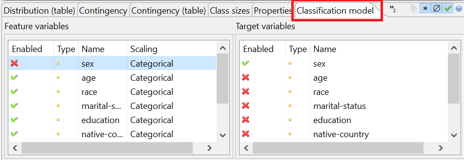
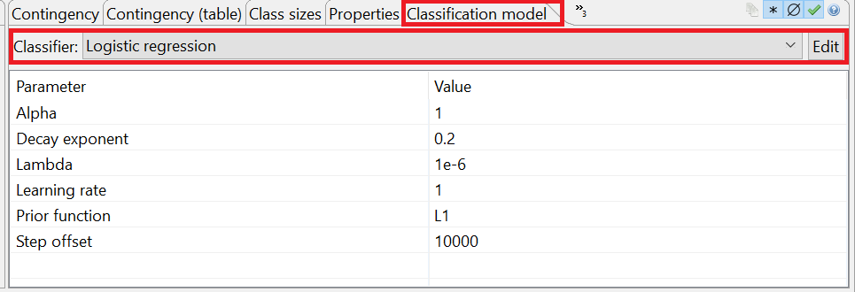
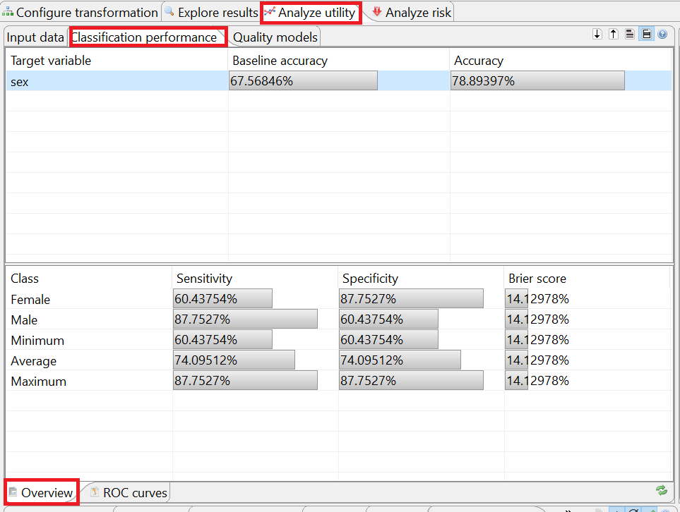
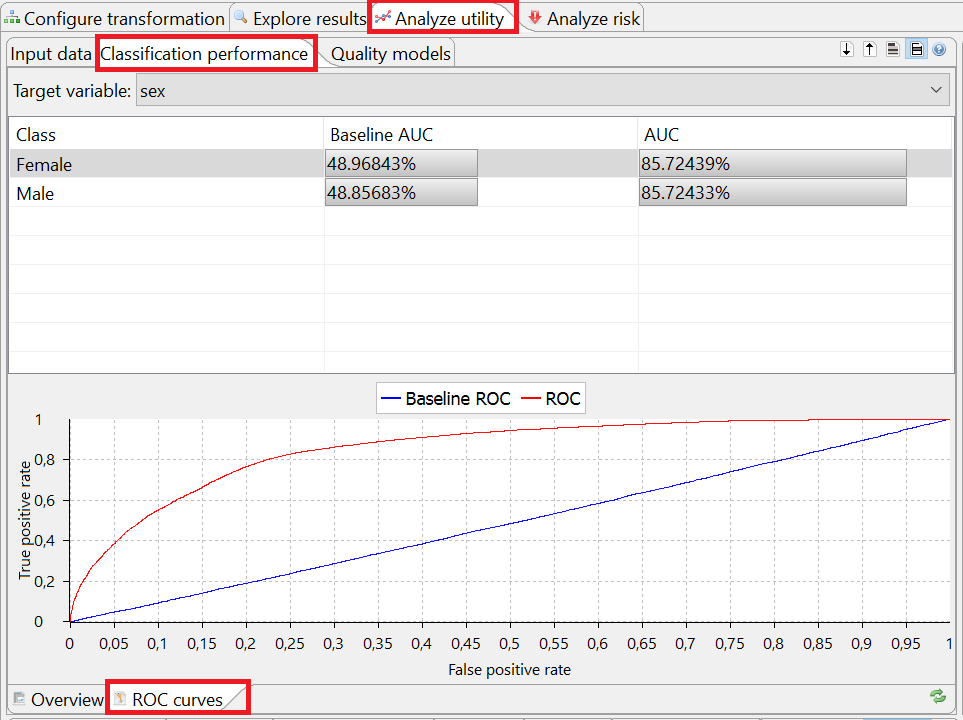

This view can be used to configure classification models and their parameters as well as to compare the performance of these models trained on input and anonymized output data. Please note that ARX supports a specific quality model for optimizing output data towards suitability as a training set for model generation.
The classification methods are decribed in [1]. The related code can be found in StatisticsClassification.java. The records are grouped then the classification metric is defined as a sum of penalties of each group. K-Anonymity Property Table T is k-anonymous with respect to attributes X1, ..., Xd if every unique tuple (x1, ..., xd) in the (multiset) projection of T on X1, ..., Xd occurs at least k times. That is, the size of each equivalence class in T with respect to X1, ..., Xd is at least k [2]. Four accuricies are calculated:In the view displayed at the bottom left, feature and target variables can be selected and feature scaling functions may be specified:
In the view displayed at the bottom right different types of classification models can be selected and configured:
ARX currently supports the following types of classification models:
At the top, two different views can be selected by tabs ("Overview" and "ROC curves"). For input as well as output data, these views show different results of the performance analysis. Performance measures are typically expressed relative to the performance of a trivial ZeroR classifier trained on unmodified input data and the selected type of model also trained on input data. Results are obtained using k-fold cross-validation.
The tables in the view "Overview" display (relative) classification accuracies as well as sensitivity, specificity and Brier score:
The plots and tables in the view "ROC Curves", display ROC curves and the Area under the ROC Curve (AUC) for selected instances of the target variable:
Please note that ARX uses an one-vs-all approach to calculate performance measures for multinomial classifiers.